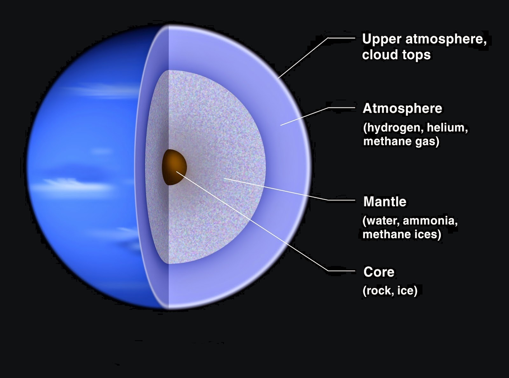

Key Facts & Summary

- Neptune is the most distant planet from the Sun.
- Neptune is the smallest gas giant.
- A year on Neptune lasts 165 Earth years.
- Neptune has 6 faint rings.
- Neptune spins on its axis very rapidly.
- Neptune is the smallest of the ice giants.
- The atmosphere of Neptune is made of hydrogen and helium, with some methane.
Orbit
Since it is the farthest planet from the Sun it has the longest orbital duration, completing a trip around the Sun in about 165 years. However, one sidereal rotation or day on Neptune is completed in 16.11 hours. The average distance from the Sun is about 30.1 AU, while at its perihelion 29.81 AU, and its aphelion 30.33 AU. The elliptical orbit of Neptune is inclined 1.77° compared to that of Earth.
Rotation
The axial tilt of Neptune is 28.32°. It is similar to the tilts of Earth 23° and Mars 25°. As a result, Neptune experiences similar seasonal changes to Earth but due to its long orbital period, the seasons last for 40 Earth years. Due to the fact that it lacks a solid body, its atmosphere undergoes differential rotations.
STRUCTURE
The internal structure is very similar to that of the planet Uranus. Its atmospheres forms about 5% to 10% of its mass and extends about 10% to 20% of the way towards the core reaching pressures of about 10 GPa or 100.000 times that of Earth’s atmosphere. Concentrations of methane, ammonia and water are found in the lower regions of the atmosphere with the mantle equivalent to 10-15 Earth masses.
This mixture is referred to as “icy” even though it is a hot, dense fluid sometimes called a water-ammonia ocean. Going even deeper the conditions may be such that even methane decomposes into diamond crystals that rain downwards like hailstones. It is thought that this kind of diamond rain occurs also on Jupiter, Saturn and Uranus. The core is likely composed of iron, nickel and silicates. The core is estimated to be about 1.5 times the mass of Earth. The pressure at the center is 7 Mbar or 700 Gpa, twice as high as that at the center of Earth with temperatures of around 5.400 K.
Atmosphere and Planetary Rings
The atmosphere is made up mostly of hydrogen, helium and methane. Very similar to Uranus, its vivid blue color is influenced by the presence of methane and some unknown factor causes the more intense color.Neptune may not be as cold as Uranus but it has the most powerful winds out of all the planets in the Solar System despite being the furthest planet from the Sun and receiving the lowest energy input from it.

Neptune has an average temperature of -214 degrees Celsius;-353 degrees. Wind speeds blowing westward on the equator reach up to 2,160 kilometers or 1.324 miles per hour, nearly a supersonic flow. Most winds travel retrograde to the rotation of the planet they are 5 times stronger than the strongest winds recorded on Earth, breaking the sound barrier. Bands and colossal storms also form on the planet.
Neptune has 5 ring systems named after the people involved in the discovery and research of Neptune. The innermost is the Galle Ring, which is faint and wide at 2.000 km or 1.242 miles. The second is the first bright ring, named Le Verrier, it is only 113 km wide or 70.2 mi. The third is the Lassell Ring, a very faint band 4.000km or 2.485 mi across. On the edge of this ring is the Arago Ring, slightly brighter and less than 100 km or 62 mi wide.The last known and outermost ring is named the Adams Ring. It is about 35 km or 21.7 mi wide but it is one of the brightest rings. It has a special feature. It is slightly inclined with bright arcs in it.